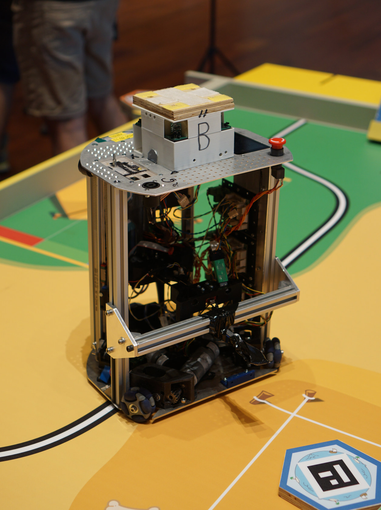

Nach zwei Jahren Corona-Pandemie wurde endlich im Roboterclub wieder ein Roboter entworfen, ausgelegt, konstruiert und gebaut. Bis auf den letzten Schritt, das Aufbauen, sogar eigentlich zwei Roboter.

Auch war diese Saison für viele Studierende die erste Gelegenheit einen Eurobot-Wettbewerb live zu erleben.
Vielleicht kommt zum zweiten Roboter in der Zukunft noch ein weiterer Blog-Post.
Mechnik für Roboter Wanda
Der Antrieb von Wanda besteht aus drei im Stern angeordneten bürstenlosen Motoren mit Planetengetriebe von Dunker. Diese treiben über ein zweistufiges Stirnradgetriebe die Antriebsräder an. Bei den Antriebsrädern handelt es sich um so genannte Onmiwheels, wodurch der Roboter zu jedem Zeitpunkt in jede beliebige Richtung fahren kann.
Als Aktorik wurde ein drei-gelenkiger Greifarm entwickelt mit welchem die Spielelemente gegriffen und im Roboter verstaut werden sollten. Der Arm erwies sich allerdings als untermotorisiert und sehr komplex in der Ansteuerung aufgrund der hohen Anzahl an verbauten Motoren (insgesamt fünf). Auch aufgrund der engen personellen Lage im Team wurde der Arm nicht am Roboter verbaut sondern ein Stupser vorne am Roboter montiert, um trotzdem Interaktion mit den Spielelementen zu ermöglichen. Im Roboter sollte ein Greifer die Spielelemente wenden und in einer Vorrichtung ablegen. Der Greifer im Roboter und die Aufnahme für die Spielelemente sind im Roboter verbaut, wurden aufgrund des fehlenden Arms jedoch nicht benutzt. Die Erfahrungen aus der Entwicklung des Arms werden in zukünftige Greifaktoriken mit einfließen, wodurch man hoffentlich zukünftig eine Nachfolgeversion des Arms an einem der Roboter sehen kann.
Elektronik
Für die Elektronik musste leider auf viele alte Lösungen zurückgegriffen werden, da es neben den Supply-Chain-Problemen auch personell eng im Team war.
Ein neues Power-Distribution-Board als Ersatz für das in die Jahre gekommene BMS ist in Arbeit, allerdings nicht fertig. Das neue Modul hat zwei Anschlüsse für 6S-LiFe-Akkus und zusätzlich einen Netzteil-Anschluss. Da die alte BMS-Platine nur einen Akku nutzen kann, wurde die im ungenutzten zweiten Akku-Slot untergebracht.
Leider kamen auch die inzwischen in Version 2.1 vorhandenen Motor-Controller Micro-Motor noch nicht zu Einsatz, weil die Software noch nie zuvor getestet wurde und es genügend aufgebaute Alpha-Motor-Platinen beziehungsweise hinreichend wenig Motoren im Roboter gab.
Software
Entgegen des ursprünglichen Vorsatzes einen Linux-Computer in den Roboter zu integrieren und die Steuerung der Roboters in ROS2 zu implementieren, wurde zwei Wochen vor den Wettbewerben entschieden doch den alten und “bewährten” Software-Stack erneut zu verwenden. Dieser Software-Stack nutzt das im RCA ursprünglich entwickelte Microcontroller-Framework modm und das dazugehörige lbuild und lässt alle Software auf einem Haupt-Microcontroller (STM32F407) laufen. Der Haupt-Microcontroller übernimmt neben der Spielstrategie, Fahrplanung und Motionplanning auch die Motorregelungen. Die Motoren sind über selbst entwickelte Motorcontroller (Alpha-Motor) per CAN-Bus angeschlossen und bekommen darüber quasi Duty-Cycle-Werte zugeschickt und senden Encoder-Werte zurück.
Schnell war eine Kopie der Software von 2019 im Gitlab angelegt. Das Anpassen an verschiedene, inzwischen drei Jahre weiter entwickelte Abhängigkeiten, wie das modm Framework, und beheben von Compiler- und Linker-Fehlern stellten sich als nervig heraus.
Ein weiteres Problem trat beim Wettbewerb in der Schweiz zu Tage: Der Haupt-Microcontroller resettete sich reproduzierbar nach ein paar Sekunden, was sich nach einigem Debuggen als Speicherproblem herausstellte. Eine Queue von CAN-Nachrichten wuchs schneller als diese geleert wurde, hatte keine Größenbegrenzung und belegt dann nach einigen Sekunden den gesamten SRAM des STM32. Ursächlich war hier die falsche Verteilung der vier Terminierungswiderstände für die zwei CAN-Busse im Roboter: Einer der Busse hatte drei, der andere nur einen Widerstand abbekommen.
Wettbewerbe
Der Roboterclub ist mit eher kleineren Gruppen zu den Wettbewerben nach Belgien, in die Schweiz und zum Internationalen Finale nach La Roche-sur-Yon gefahren.
Belgien
Zum Wettbewerb in Belgien am 23.24. April 2022 war der Roboter leider noch nicht in einem Zustand um für den Wettbewerb zu homologieren, jedoch konnten wertvolle Erfahrungen gesammelt werden und einige Tests mit den vollständig aufgebauten Wettbewerbsspielfeldern durchgeführt werden. Außerdem entstand ein Großteil der saisonspezifischen Software vor Ort, sodass das Wochenende insgesamt positiv aufgefasst wurde.
Schweiz
Etwa einen Monat später, am 12. Mai, ging es los in den Süden der Schweiz nach Yverdon-Les-Bains um vom 13. bis zum 14. Mai am dortigen Wettbewerb teilzunehmen. Der Roboter homologierte hier nach kleineren Problem, die jedoch einfach zu lösen waren, etwas verspätet und konnte an den Spielen teilgenommen werden. Mit wenigen Ausnahmen wurde auch eine stattliche Anzahl an Punkte erreicht.
Während des Wettbewerbes wurde außerdem eine Inertiale Messeinheit (IMU) nachgerüstet und in die Software eingebunden um die schlechte Qualität der Orientierungs-Information den Encodern des Omniwheel-Antriebs und des Ultraschall-Baken zu verbessern. Leider ist die vollständige Integration in unseren Software-Stack erst nach dem Wettbewerb fertig geworden.
Auf dem Rückweg aus der Schweiz nach Aachen wurde auf dem Weg noch ein Zwischenstopp eingelegt beim Creux du Van und die beeindruckende Felsformation umwandert.
Internationales Finale in Frankreich
Auch nach Frankreich ist am 25. Mai eine kleine Vertretung des Roboterclubs gefahren. Da nach wie vor der aufwendige Greifarm nicht verbaut war, wurde die Integration der IMU im Wettkampf getestet. Eine einfache Kombination aus der Position der Ultraschall-Baken](/projekt/ultraschall-baken.html) und die Orientierung der IMU führte zu einer deutlichen Verbesserung der Fahrweise des Roboters als zuvor. Dadurch konnten einfache Aufgaben in fast Wettbewerbsspielen erledigt, sodass auch die Punkteschätzung der Roboterstrategie korrekt war.
Deutschland
Weil aus Deutschland nur drei Teams bereit waren, war kein nationaler Vorentscheid nötig. Da bei den Teams jedoch trotzdem Bedarf nach einem Zusammentreffen bestand wurde entschieden einen Wettbewerb im späten Sommer (8./9. Oktober 2022) in Aachen auszurichten. Dazu gibt es hier mehr Informationen.